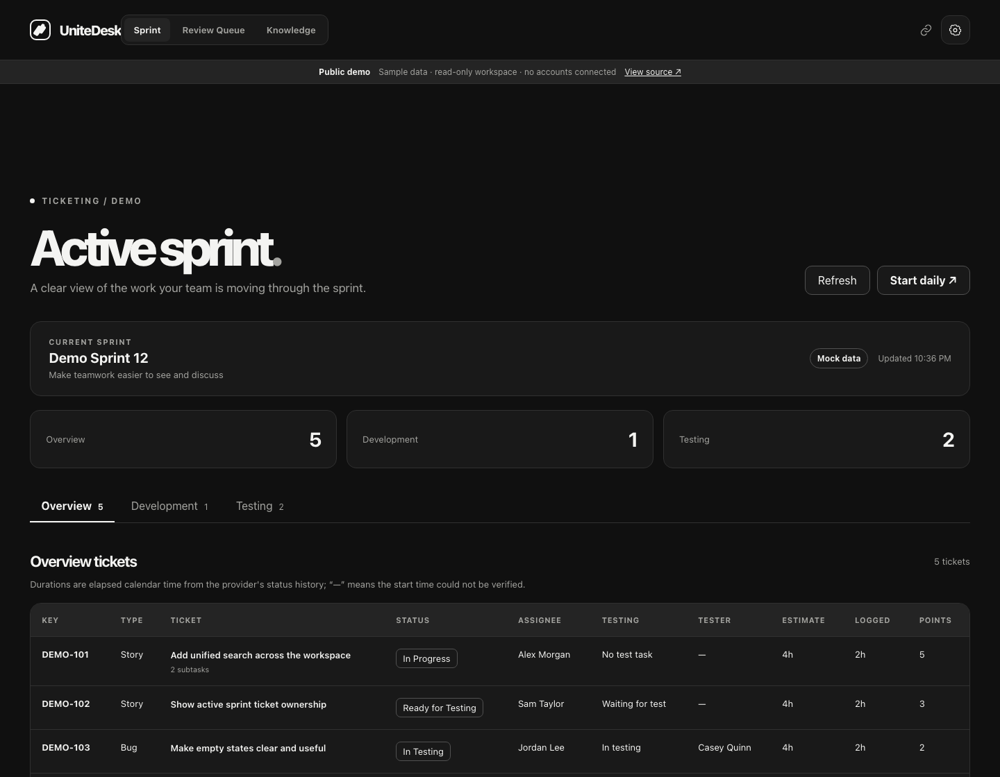
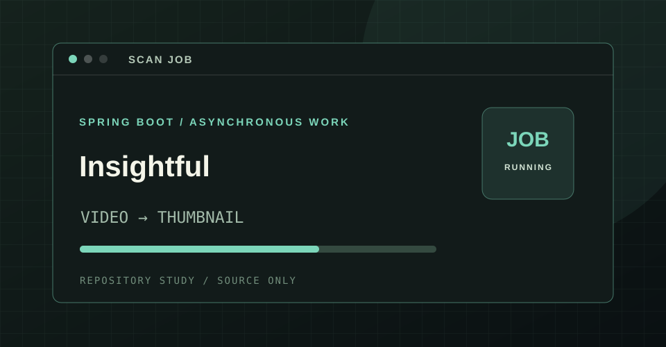
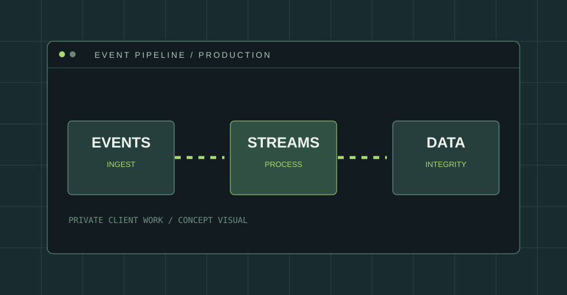

01 / PUBLIC PRODUCT
UniteDesk
A React and TypeScript workspace bringing sprint work, code reviews, documentation, Scrum Poker and retrospectives into one flow.
I build Java and Spring Boot services, React products, and practical AI workflows. My experience spans production event systems, connected devices, team leadership, and independent products.
Public demos and repositories sit alongside concise accounts of professional work. Client code and internal data remain private.

A React and TypeScript workspace bringing sprint work, code reviews, documentation, Scrum Poker and retrospectives into one flow.

Choose a driver and compare pit-stop scenarios using historical race snapshots. The public demo uses deterministic explanations; a separate private version includes an AI agent and authenticated APIs.

A Spring Boot thumbnail service with asynchronous jobs, bounded workers, persistent state, failure handling and a local demo profile.

Designed and implemented a Kafka Streams service in Java for betting events, and investigated incidents with Splunk and Grafana. Source and operational data are private.
Also: autonomous agriculture systems, enterprise Java services, product delivery and AI workflow prototypes. I can explain scope, architecture and my contribution during an Upwork conversation.
Share the product, the difficult system or the workflow you want to improve. We can start with a focused first milestone.
Contact me on Upwork ↗